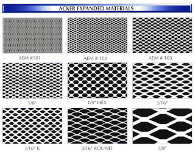
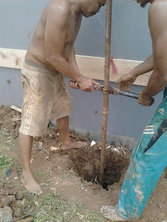
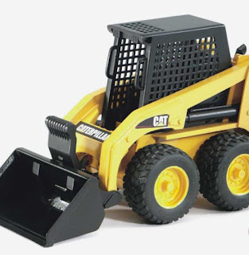

Jual Atap Lengkung di Ngawi ☎ 0822 4582 0777 (Rinanti)
Galvalum sudah menjadi primadona bagi banyak orang yang bekerja dalam industri pembangunan. Dikarenakan banyak keunggulan yang mengalahkan kayu sebagai rangka konvensional. Keberadannya pun sudah menggeser kayu dan bahkan sewaktu-waktu dapat menggantinya. Salah satu atap yang paling laris di pasaran adalah atap yang terbuat dari galvalum. Ini dikarenakan setiap bangunan tentunya membutuhkan atap sebagai penutup bagian atas. Apa yang terjadi? Tentu anda tahu, atap tersebut tidak akan bertahan lama dan bahkan bisa langsung roboh karena tidak adanya pondasi yang menyangganya.
Distributor & Supplier Atap Lengkung

Atap lengkung juga difungsikan sebagai peneduh bagi kendaraan. Masing-masing atap lengkung mempunyai keunggulan dan kelemahan sendiri.
Sifat fleksibelnya dan modelnya yang unik membuatnya dapat dijadikan atap lengkung Ngawi berbagai bangunan. Salah satu jenisnya adalah atap lengkung Ngawi. Salah satunya juga harus kuat menahan derasnya air hujan.
Atap lengkung biasa dapat anda temukan pada bangunan-bangunan yang dibuat untuk keperluan olahraga. Maka sudah pasti bahwa kualitas atap lengkung Ngawi tersebut sangat diragukan. Atap galvalum yang satu ini mempunyai bentuk yang sangat unik. Bila anda tertarik untuk mempunyai atap lengkung Ngawi pada bangunan anda maka janganlah ragu. Maka anda akan mendapatkan penawaran dengan harga terjangkau.
Info Pemesanan Selengkapnya
Google Maps: https://www.google.com/maps/d/u/0/viewer?mid=1jTQUf9ULWdUIa8iDLwabVtcOdrQf8Eme&ll=-7.272623401464149%2C112.6482284&z=17
Note: https://www.facebook.com/notes/distributor-of-industrial-supply/pabrik-supplier-atap-lengkung/1782710675362145/
Event: https://www.facebook.com/events/137280070316926/
Portfolio Produk: https://www.facebook.com/pg/DistributorOfIndustrialSupplyDIS/photos/?tab=album&album_id=1683772021922678
Distributor & Supplier Besi Beton

Karena perkembangan suatu proses pembangunan maka hasil bola material yang dapat mendukung pembangunan tersebut agar terlihat lebih kokoh dan juga awet. Apa Cepetan merupakan besi yang dapat diaplikasikan pada suatu gedung karena bahan ini lebih mudah didapat dan juga harganya pun lebih ekonomis dibandingkan dengan penggunaan material lainnya. Besi beton dapat menjadi pondasi pada bangunan yang kuat sehingga membuat bangunan yang aplikasikan besi ini dapat kokoh dan tahan lama. Dan besi beton polos memiliki penampakan benda dengan permukaan licin atau tidak bersirip.
Segera kunjungi dis.or.id untuk mendapatkan besi beton yang anda inginkan. Anda bisa mendapatkan besi beton dengan harga yang sangat murah dan terjangkau. Karena, disan anda bisa mendapatkan besi beton yang anda inginkan yang pastinya sesuai dengan yang anda ekpetasikan.
Distributor & Supplier Steel Grating

Plat Grating terbaru memiliki kualitas terbaik yang bisa digunakan untuk sarana pembangunan pada industri hingga pertambangan. Salah satunya dengan menggunakan grating dalam kombinasi pembangunan. Secara umum, produk ini digunakan dalam kontruksi lantai, kemudian deck, anak tangga pada bangunan pabrik kemudian, tambang minyak dan sejumlah bangunan industri lain nya. Steel Grating yang terbuat dari baja berkualitas ini dilapisi dengan Galvanis. Permukaan atas grating ini bergerigi sehingga saat di aplikasi pada bangunan tidak terasa licin. Plat Grating dapat Anda temui dimana saja. Pada umumnya, Grating hanya memiliki 2 type, yaitu serrated atau bergerigi dan plain atau polos.
Terdapat banyak jenis steel grating yang di jual sehingg anda dapat dengan mudah memilih sesuai dengan kebutuhan.
Distributor & Supplier Pipa (Hitam/Gas, Galvanis)

Mungkin anda masih bingung mengenai manfaat pipa hitam ini dalam kehidupan, padahal jika dilihat lagi ada banyak manfaat yang diperoleh dengan mengaplikasikan pipa hitam gas galvanis. Pipa hitam banyak digunakan untuk kebutuhan konstruksi bangunan karena ia kokoh dan tahan karat karena sudah terlapisi dengan lapisan stainless steel. Kebanyakan orang memanfaatkan pipa hitam ini pada area pertambangan gas dan minyak, sebagian orang pun bahkan mengira bahwa nama asli dari pipa hitam memanglah pipa gas. Karena sudah terlapisi dengan stainless steel pipa ini dapat diaplikasikan pada segala kondisi cuaca di Indonesia. Segera hubungi kami untuk info pemesanan selengkapnya maupun berkonsultasi mengenai kebutuhan pipa secara langsung.
Distributor & Supplier Kawat Bronjong/Gabion

Kawat bronjong sering dianggap sebagai pencegah erosi. Ini seperti halnya kawat lainnya. Selain itu, sebenarnya kawat bronjong ini juga bisa dikatakan sebagai pemerkuat bukit. Hanya saja, karena ini berfungsi untuk mencegah erosi, maka kualitas kawat berbeda dengan kawat yang sering digunakan. Agar tidak berkarat sehingga bisa bertahan dalam kurun waktu yang lama, kawat ini dibuat dari bahan galvanis yang anti karat. Anda bisa lihat tumpukan bebatuan di pinggir pantai yang dirantai dengan kawat bronjong.
Kawat bronjong kini dapat anda temui dan dapatkan dengan mengunjungi dis.or.id. Disana anda bisa mendapatka kawat dengan harga yang cukup terjangkau dengan kualitas terbaik yang dimilikinya.
Distributor & Supplier WF H-beam
.jpg)
Jenis besi ini banyak dimanfaatkan sebagai bahan konstruksi baja. sementara untuk pemesanan juga mudah, Anda cukup menghubungi pihak produsen sudah bisa mendapatkannya. Sungguh mudah bukan?
Besi Wf berkualitas tinggi bisa anda dapatkan dengan sangat mudah di dis.or.id. Disana anda bisa mendapatkan besi tersebut dengan kualitas terbaik serta harga yang sangat terjangkau. Disana anda bisa mendapatkan besi wf yang anda inginkan. Pastinya dengan harga yang sangat terjangkau.
Distributor & Supplier Expanded Metal

Expanded metal atau yang dikenal juga dengan grid mesh ini adalah lembaran baja berbentuk jala dengan lubang-lubang yang homogen dan sangat cocok jika digunakan untuk berbagai aplikasi selain dari Pagar BRC. Oleh sebab itu, expanded metal ini diyakini akan bisa lebih tahan lama dan juga lebih kuat. Expanded Metal memiliki keunggulan dibandingkan dengan yang lain dari sisi kekuatannya yang cukup bagus serta biasa digunakan sebagai instalasi pagar, lantai, ataupun dinding.
Expanded Metal ada yang berbentuk diamond dengan model yang lebih menarik, kuat, ekonomis, serta tahan lama. Jenis ini dapat Anda gunakan sebagai pengaman partisi, pagar pembatas, penutup mesin, tanduk kendaraan, dinding panel, angin-angin dan masih banyak lagi.
Distributor & Supplier Plat (Hitam, Kapal, Bordes, Strip)

Karena dis.or.id adalah distributor pertama yang langsung mengambil barang dari pabrik.
Di dis.or.id, anda dapat mendapatkan nya dengan harga lebih miring dibandingkan dengan toko besi lain nya. Dis.or.id menjual plat besi dengan harga terjangkau, banyak ukuran ataupun dapat menyesuaikan ukuran yang anda minta. Tak perlu khawatir harga, karena harga yang di patok pastinya sangat murah dan terjangkau.
Distributor & Supplier Floor Deck (Bondex)

Floor deck atau dikenal juga sebagai penyangga lantai cor, merupakan produk yang berfungsi menggantikan fungsi bekisting saat akan melakukan pengecoran plat lantai. Jika memilih menggunakan Floor Deck ini bisa langsung berfungsi juga sebagai bekisting permanen dan siap di cor dalam waktu singkat. Untuk bahan utamanya sendiri umumnya berasal dari plat baja jenis galvanized dilengkapi dengan tulang. Sebagai pengganti tulangan positif searah.
Jika anda ingin mengetahui lebih lanjut mengenai floor deck ini, anda bisa langsung mengunjungi dis.or.id. Anda juga bisa langsung memesannya ataupun hanya ingin mengetahui detail harga yang di patok dari floor deck tersesbut.
Distributor & Supplier Atap Galvalum

Seng galvalum adalah bahan seng dengan berbagai kelebihan yang memiliki komposisi tertentu. Apalagi bila ruangan tersebut tidak dilengkapi pendingin ruangan.
Maka, apakah solusi bagi masalah tersebut? Salah satu solusi yang kami berikan adalah Atap galvalum. Itulah sedikit perbedaan kecil dari rangka atap galvanis dengan kayu. Galvalum mempunyai berbagai ukuran yang sesuai dengan kebutuhan.
Galvalum diklaim mempunyai daya tahan karat 4x lebih kuat dari galvanis. Namun, banyak anggapan yang mengatakan bahwa memasang galvalum akan membuat rumah akan terasa panas dan berisik. Harus diakui bahwa atap seng yang digunakan dapat menyebabkan rumah terasa panas. Bila anda mencari atap galvalum dengan berbagai ukuran, maka anda datang ke tempat yang tepat. Seng tidak dapat memantulkan panas dari matahari. Jenisnya yang beragam dan banyak ukuran yang dapat disesuaikan mampu memenuhi kebutuhan anda.
Distributor & Supplier Truss Canal C
Sudah tahukah anda apa yang dimaksud dengan galvalum? Galvalum memang istilah yang kerap kali kita dengar dan umumnya memang sangat erat kaitannya dengan baja. Jadi ketika anda mendengan istilah CNP, diharapkan anda tidak bingung atau merasa rancu lagi, karena pada dasar nya sama. Besi kanal C ini amat populer dalam dunia pembangunan. Jarak antar reng galvalume perlu diperhatikan. Pilihan ini amatlah tepat mengingat bahwa besi ini sangat melengkapi kekurangan dalam pembangunan rumah minimalis tersebut. Mencari kanal c galvalum berkualitas dengan harga murah? Maka dis.or.id adalah jawaban tepat untuk anda. Disana anda akan banya kmendapat info menarik seputar truss besi kanal c dan masih banyak lagi.
Distributor & Supplier Hollow Galvalum

Seperti yang telah saya tuliskan di beberapa artikel, salah satu fungsi dari Hollow Galvalum adalah sebagai rangka plafon atap rumah. Penggunaan besi ini sebagai rangka atap rumah sudah mulai banyak digunakan dalam beberapa tahun terakhir ini. Untuk memudahkan pemasangan atap, tentunya diperlukan hollow galvalum yang berkualitas bukan?
Karena hollow galvalum ini dapat ditemukan di toko bangunan khusus yang keberadaannya juga sudah menjamur. Ukuran hollow galvalum plafon yang paling bagus untuk digunakan yaitu ukuran 2X4 dengan tebal 0,25. Memang selain memiliki kekuatan yang luar biasa, juga rangka plafon jenis ini memiliki ketahanan yang bisa bertahan hingga berpuluh puluh tahun. Apakah anda sedang mencari hollow galvalum dengan segala kelebihannya? Bila iya, maka anda cukup mengunjungi situs dis.or.id. Tunggu apa lagi, silahkan hubungi customer service kami untuk melakukan pemesanan hollow galvalum.
Distributor & Supplier Seng Gelombang

Atap adalah hal penting yang harus diperhatikan pada setiap bangunan. Andapun wajib memperhatikan bagaimana atap bagian bangunan tersebut apakah berkualitas ataukah tidak, atap dengan kualitas rendah akan beresiko kerusakan maupun kebocoran yang pasti merugikan seisi bangunan ruangan tersebut. Seng gelombang memiliki banyak keunggulan dari berbagai sisi. Seng gelombang warna memiliki banyak keunggulan dari segi manapun, anda bahkan tak perlu lagi melakukan cat ulang pada seng gelombang atap yang jenis ini. Melihat dari keunggulannya ini, seng gelombang warna memang memiliki harga yang relatif lebih mahal. Terkadang tak hanya jenis seng gelombang dengan ukuran besarlah yang dicari kebanyakan orang.
Dengan seng gelombang kecil, anda tak perlu lagi repot memotong ukuran asli seng gelombang dan menata seng gelombang dengan ukuran yang pas pada atap bangunan. Salah satu distributor yang terkenal akan kualitas dan jaminannya adalah dis.or.id anda dapat mengunjungi situs tersebut dan menjelajahinya.
Distributor & Supplier Plat Seng

Masing masing ukuran tersebut memiliki harga yang berbeda beda, karena biasanya harga akan tergantung dari berat dalam kilogram.
Harga plat galvanis lembaran dan per meter juga berbeda beda. Jika anda penasaran dengan harga plat galvanis ini, silahkan hubungi customer service kami untuk menanyakannya. Berbicara tentang plat seng maka tentu tidak lepas dengan galvalum dan galvanis, yang merupakan jenis plat seng paling berkualitas. Harga plat galvanis lembaran tentu nya akan lebih mahal jika dibandingkan yang per meter.
Sebuah rumah tidak akan bisa disebut rumah jika dalam komponen nya tidak ada atap nya.
Distributor & Supplier Genteng Metal

Kami adalah distributor genteng metal, tersedia berbagai ukuran dan varian genteng metal. Salah satu varian genteng metal yang populer adalah genteng metal pasir, jenis ini dinilai yang terbaik karena sudah terbukti lebih tahan panas, dan juga mampu membantu dalam peredaman suara saat hujan. Genteng metal pasir adalah genteng yang memiliki bobot yang ringan tetapi memilki kekuatan yang tinggi sehingga genteng metal pasir adalah genteng yang memilki kualitas yang terbaik dibandingkan dengan genteng metal lainnya. Kami dapat menjamin genteng metal yang kami jual adalah produk yang berkualitas. Apakah anda sedang mencari genteng metal berkualitas? Maka anda berada di tempat yang tepat, silakan kunjungi dis.or.id dan dapatkan info menarik khusus untuk anda yang ingin segera mengetahui keunggulan genteng metal ini.
Silahkan hubungi kami untuk informasi lebih lanjut.
Distributor & Supplier Besi Wiremesh

Jika anda membutuhkan besi lonjor yang membentuk anyaman anda dapat membeli jenis besi wiremesh pada kami. Nama lain dari besi wiremesh ini adalah besi anyam. Bentuk anyaman dari besi wiremesh sendiri bermacam-macam, ada yang membentuk kotak-kotak ada juga yang jajar genjang, anda dapat memilih sesuai kebutuhan. Dengan memiliki bentuk yang mirip seperti besi anyam, pemanfaatan besi ini sangat banyak terutama dalam dunia konstruksi, salah satunya adalah sebagai plat lantai dan dak beton. Jika anda hendak mengaplikasikan besi wiremesh, maka tentukan dulu kebutuhannya sehingga bisa menentukan jenis wiremesh mana yang cocok untuk diaplikasikan. Besi wiremesh terdiri dengan berbagai macam ukuran ketebalan, ketebalan 8 – 10 digunakan untuk bangunan bertingkat. Dan ketebalan besi 4 – 6 diaplikasikan untuk kebutuhan bangunan biasa. Besi wiremesh dengan kualitas bagus biasanya akan diproses dengan sistem las otomatis, sehingga susunan kawatnya rapi dan jaraknya teratur. Jika anda saat ini membutuhkan besi wiremesh dengan kualitas terbaik, segera kunjungi dis.or.id.
Distributor & Supplier Pagar BRC

Potongan besi berdiameter tertentu tersebut dig abungkan dengan bantuan mesin las wiremesh. Pagar BRC termasuk pada kategori pagar besi yang siap pakai, anda bisa memanfaatkannya untuk berbagai kebutuhan bangunan. Untuk melindungi sebuah bangunan, kekuatan pagar BRC sangat dapat diandalkan karena ia diproduksi dengan baja bertegangan tinggi dengan tegangan ijin 2900 kg/cm2, kekuatannya bahkan 2,5 kali lipat dibanding jenis besi biasa. Lapisan galvanis yang terdapat pada pagar BRC menjadikannya tahan akan korosi maupun karat, tak heran bila umur pengaplikasian dari pagar BRC bisa mencapai 10 tahun.Dan juga pagar BRC memiliki lapisan galvanis sehingga ia daya tahan terhadap karat > 10 tahun sehingga sangat cocok diaplikasikan pada idaerah yang korosif seperti tepi pantai, daerah belerang, atau dekat pabrik.
Distributor & Supplier Kawat Loket, Kawat Harmonika

Tak hanya sampai disitu, kebutuhan akan kawat loket harmonika mencakup berbagai bidang industri, baik keperluan rumahan sampai industri. Untuk kehidupan sehari-hari kawat harmonika banyak digunakan untuk keperluan rumahan, konstruksi, dan industri. Kami menyediakan kawat harmonika dengan berbagai ukuran, tersedia ukuran kawat dengan diameter 1,5 mm sampai 4 mm dan ukuran lubang 20 mm sampai 70 mm. Untuk informasi selengkapnya, anda dapat menghubungi kami, terlah tersedia kawat loket harmonika dengan diameter 1,5 mm – 4 mm, disertai lubang 20 mm sampai 70 mm tergantung dengan kebutuhan anda.
Distributor & Supplier CNP & UNP

Besi yang sering diaplikasikan untuk keperluan sambungan dan dudukan atap adalah besi kanal UNP, bentuk besi ini melengkung dan membentuk huruf U. Besi UNP juga cocok diaplikasikan untuk kebutuhan girts / penutup dinding. Besi UNP sebenarnya memiliki spesifikasi yang hampir sama dengan wide flange, hanya saja besi UNP mudah menekuk sehingga sangat jarang digunakan sebagai kolom bangunan. Sedangkan untuk besi CNP sendiri lebih banyak digunakan pada dinding cladding atau gording. Jika besi UNP dimanfaatkan untuk keperluan penutup sebuah dinding karena bentuknya melengkung seperti huruf U, beda halnya dengan besi CNP yang sering disebut sebagai balok purlin. Besi CNP sangat fleksibel dalam pengaplikasiannya karena ia dapat dimodifikasi dari plat koil dengan teknik cutting sehingga membentuk huruf C. Pemanfaatannya bahkan bisa untuk keperluan otomotif.
Distributor & Supplier Besi Siku

Dalam dunia konstruksi, salah satu material yang cukup penting dan tidak boleh dilupakan adalah besi siku. Besi siku dibuat dengan bentuk standar yang telah disesuaikan berdasarkan kebutuhan penggunanya, tak heran bila ia masuk kategori besi penyangga yang dapat diandalkan. Bentuk dari besi siku sendiri adalah membentuk dua sisi tegak yang lurus, untuk sudut berhadapannya sendiri tergantung dengan spesifikasi kebutuhan anda. Besi siku dibuat dengan ukuran maksimal 6 meter dan dapat menyesuaikan panjang sisi dan ketebalan tiap sisinya. Kami menerima segala kebutuhan anda mengenai besi siku ini! Tentu saja produk yang kami tawarkan berkualitas unggul. Anda dapat manfaatkan produk besi siku dari perusahaan kami untuk keperluan industi, otomotif, bangunan, furnitur, konstruksi dan sebagainya. Segera hubungi kontak kami untuk mengetahui spesifikasi besi siku yang anda butuhkan.
Distributor & Supplier Hollow (Hitam, Galvanil, Galvanis)

Apalagi jika mengingat menggunakan besi hollow akan membuat pengerjaan konstruksi selesai lebih cepat. Tentu saja hal ini karena kelebihan yang ditawarkan oleh besi hollow sendiri tidak dimiliki kayu, material yang kokoh, pengerjaan cepat, dan tidak mudah rapuh. Tentu saja hal ini dikarenakan kekuatan yang dimiliki hollow galvanis tidak bisa dibandingkan dengan kayu, material ini juga lebih mempercepat pembangunan konstruksi. Besi hollow memiliki kekuatan yang lebih kokoh dan dapat mempercepat pekerjaan konstruksi karena strukturnya yang mudah diatur. Jika saat ini anda membutuhkan besi hollow, anda dapat menghubungi kontak yang telah tersedia atau kunjungi saja website resmi kami di dis.or.id. Kami telah menyediakan besi hollow hitam galvanil galvanis yang bisa anda pesan langsung. Apabila anda membutuhkan material hollow hitam, kami dapat melayani kebutuhan anda tersebut dengan berbagai spesifikasi ukuran. Kami pun merupakan distributor relasi dari dis.or.id yang menawarkan produk hollow hitam galvanil galvanis dengan kualitas terbaik dan harga yang murah. Terdapat besi hollow dengan berbagai ukuran yang bisa anda pesan langsung, misalnya: ukuran besi hollow 40 x 40 x 2 mm x 6 Meter, 50 x 50 x 3 mm x 6 meter hingga ukuran 150 x 150 x 5 mm x 6 meter.Segera hubungi kontak kami untuk info lebih lanjut. anda dapat memesan besi hollow hitam galvanil galvanis tersebut dengan berbagai ukuran, baik ukuran besi hollow 40 x 40 x 2 mm x 6 Meter, 50 x 50 x 3 mm x 6 meter sampai dengan ukuran 150 x 150 x 5 mm x 6 meter. Kami menyediakan besi hollow hitam dengan ukuran 40, 50, 150 dan lain sebagainya dengan panjang rata-rata 6 meter. Untuk anda yang membutuhkan besi ini, kami menyediakan ukuran besi hollow yang variatif 40 x 40 x 2 mm x 6 Meter, 50 x 50 x 3 mm x 6 meterr sampai dengan ukuran 150 x 150 x 5 mm x 6 meter. Untuk itu hubungi kontak kami segera!
Distributor & Supplier Pipa Pancang

Pipa pancang yang memiliki fungsi cukup penting dalam sebauh proyek tentu saja tersedia di sini. Terutama bagi proyek berjalan yang sedang melakukan pembangunan di atas permukaan laut. Sedangkan dari segi spesifikasi, pipa pancang tersedia dalam berbagai ukuran. sedangkan dari segi spesifikasi maupun ukuran, pipa pancang cukup variatif dan bisa di sesuaikan dengan kebutuhan. apalagi jika yang di katakan adalah di industri DIS ini. Termasuk juga di Industri DIS. Dengan demikian Anda akan mendapatkan pipa pancang berkualitas.
Jasa Pondasi Bor (Strouss/Borepile)

oleh karena itu, jika Anda ingin menggunakan jasa pengeboran, tidak dapat di pungkiri lagi bahwa hal itu akan sangat membantu sebagai solusi. Bahkan tidak perlu jauh-jauh karena di sini juga menerima pemesanan jasa tersebut. Di sini jasa pondasi bor melayani pengeboran yang mana hasil dan kualitasnya terjamin. Akan tetapi, perlu di ketahui pula kalau selama proses pengeboran tersebut akan ada suara bising yang cukup mengganggu sekalipun tidak menimbulkan getar. Jika mengenal pengeboran lebih jauh, sebenarnya ada dua jenis yakni manual dan otomatis dengan penggunaan mesin. Yakni pengeboran manual atau yang otomatis dengan menggunakan mesin. Selain penggunaan jasa pondasi bor, Anda bisa memiliki mesin sendiri. Mesin seperti ini pun telah banyak di temukan di pasaran.
Distributor & Supplier Genset (New/Second)

Sedangkan dalam pengaplikasian tersebut, tenaga dari genset di hasilkan dari bahan bakar solar.
Dalam hal ini perlu di ketahui bahwa harga genset memang cukup tinggi. Akan tetapi, jika menginginkan kualitas terpercaya, maka bisa juga memilih membeli yang masih baru saja. Namun, dari segi kualitasnya jangan khawtair karena masih banyak genset bekas yang kondisinya hampir seperti genset baru.
Distributor & Supplier UPS

Hanya saja, yang tidak mengetahui nya pu juga cukup banyak. Sedangkan untuk pengertiannya, UPS merupakan salah satu alat elektro yang berfungsi untuk menyimpan tenaga listri sehingga listrik tetap bisa menyela sementara ketika sumber utama terptus. UPS sendiri secara umum sebenarnya cukup penting untuk di miliki. oleh sebab itu, jika memang ingin membeli UPS, silahkan Anda menyesuaikan dengan bagaimana kebutuhan Anda. mengingat akan hal tersebut, maka Anda bisa memilih yang paling pas untuk pembeliannya. Sedangkan untuk memiliki UPS berkualitas, Anda bisa merujuk pada DIS.
Distributor & Supplier Forklift (Second)

Jika Anda sedang ingin membeli forklif, jangan khawatir karena di sini juga menyediakannya. oleh karena itu penjualan forklif pun banyak di mana-mana termasuk di sini. Jika tidak ingin yang baru pun Anda bisa memilih forklif yang di jual bekas. sedangkan untuk pembeliannya, memang bisa memilih antara yang baru dan bekas. Bahkan meskipun bekas, bisa terlihat seperti baru. Nah, dengan kualitas yang bagus ini, maka forklif akan membuat aktivitas industri Anda menjadi lebih mudah dalam berbagai hal. Apalagi, di sini yang di tawarkan adalah forklif yang siap pakai.
Jasa Pembuatan Moulding Inject

Anda sedang bingung akan membuat inject moulding? Terkait akan hal tersebut, jangan khawatir karena saat ini ada banyak penawar jasa, termasuk yang di sarankan DIS, yang siap membantu Anda. Tidak hanya terbatas pada kuantitas, akan tetapi, juga kualitas moulding inject ini sangatlah terjamin mutunya. sedangkan bagi Anda yang sedang bingung untuk mencari ide bentuknya, jangan khawatir karena ada beberapa ide yang bisa Anda gunakan.
Jasa Pembuatan Sparepart Mesin Produksi / Alat Berat

Alat berat, di dunia mesin tentu saja bukanlah barang atau produk yang asing. Apalagi mengingat bahwa sparepart ini sangat penting sehingga pembuatannya pun memerlukan perhatian yang tinggi. Jadi sebisa mungkin Anda harus memilih jasa terpercaya. Salah satunya adalah sebagaimana yang di tawarkan industri DIS. Terkait dengan hal itu, perlu Anda ketahui bahwa pembuatan sparepart yang salah, bisa jadi akan membahayakan si pengguna. Karena itulah di perlukan pembuatan yang tepat sehingga hasilnya sempurna dan bisa bekerja secara maksimal. Hal inilah yang membuatnya harus di produksi oleh jasa terpercaya sehingga akan semakin aman. Semakin baik spesifikasi nya, tentu akan semakin mahal.
Jasa Service Elektronik (Kompor Gas, Dispenser, Mesin Cuci)

Service elektronik, kini sudah banyak di temui. mengimbangi akan hal itu, jasa service pun juga kian menyebar di mana-mana. Jadi, dengan menggunakan jasa ini, Anda akan mendapatkan kembali fungsi dari beberapa elektronik yang rusak tersebut. Kalau berbicara masalah kualitas, jangan khawatir karena DIS menyediakan service handal yang akan melakukan perbaikan sempurna. Nah, kalau masalah servicenya sendiri sebenarnya Anda bisa juga melakukannya pada barang-barang yang harus di cek saja sekalipun tidak ada keluhan secara spesifik. Selain untuk perbaikan, Anda pun bisa juga hanya melakukan pengecekan tanpa keluhan sebagaimana service pada umumnya. Hanya saja kebanyakan orang memang melakukan service elektronik saat ada keluhan yang di rasakan saja.
Atap memang tidak diragukan lagi manfaatnya, bisa bayangkan bukan bila ada bangunan tak beratap. Hanya bangunan yang terbengkalai yang tidak mempunyai atap. Ada pula bangunan yang tak beratap dan hanya menjadi pondasi. Dengan senang hati, kami akan memberikan solusi untuk setiap kebutuhan dan keperluan anda. Maka, dengan senang hati kami akan membantu anda.